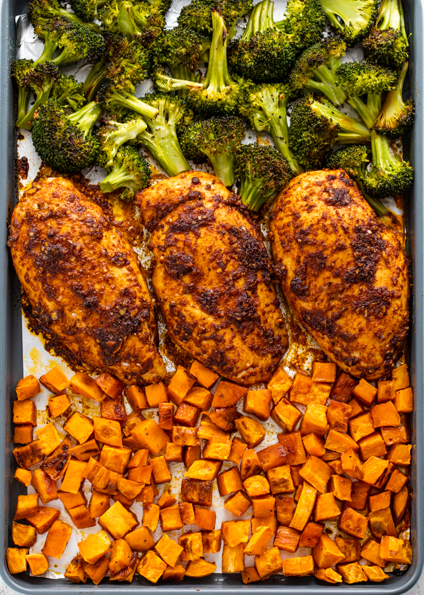

Main Page
Weeknight Meal

One-Pan Roasted Sweet Potato, Chicken & Broccoli Bowl
This vibrant one-pan meal is a perfect balance of savory, sweet, and hearty. Roasted sweet potatoes bring natural caramelization, tender chicken adds lean protein, and crisp broccoli rounds it out with freshness and fiber. Everything comes together on a single sheet pan for minimal cleanup and maximum flavor.
Perfect for meal prep or a quick weeknight dinner, this dish is seasoned with a simple blend of olive oil, garlic, and spices that tie everything together. It’s wholesome, filling, and endlessly customizable — feel free to toss in your favorite herbs or a squeeze of lemon for a bright finish.
Ingredients
- 2 medium sweet potatoes, peeled and cubed
- 2 boneless, skinless chicken breasts (about 1 lb), cut into bite-sized pieces
- 1 large head of broccoli, cut into florets
- 2 tablespoons olive oil
- 1 teaspoon garlic powder
Steps
- Preheat the oven to 425°F (220°C) and line a large baking sheet with parchment paper or lightly grease it./li>
- Prep the sweet potatoes: In a large bowl, toss the cubed sweet potatoes with 1 tablespoon of olive oil, half the garlic powder, paprika, thyme, salt, and pepper. Spread them out on one half of the baking sheet.